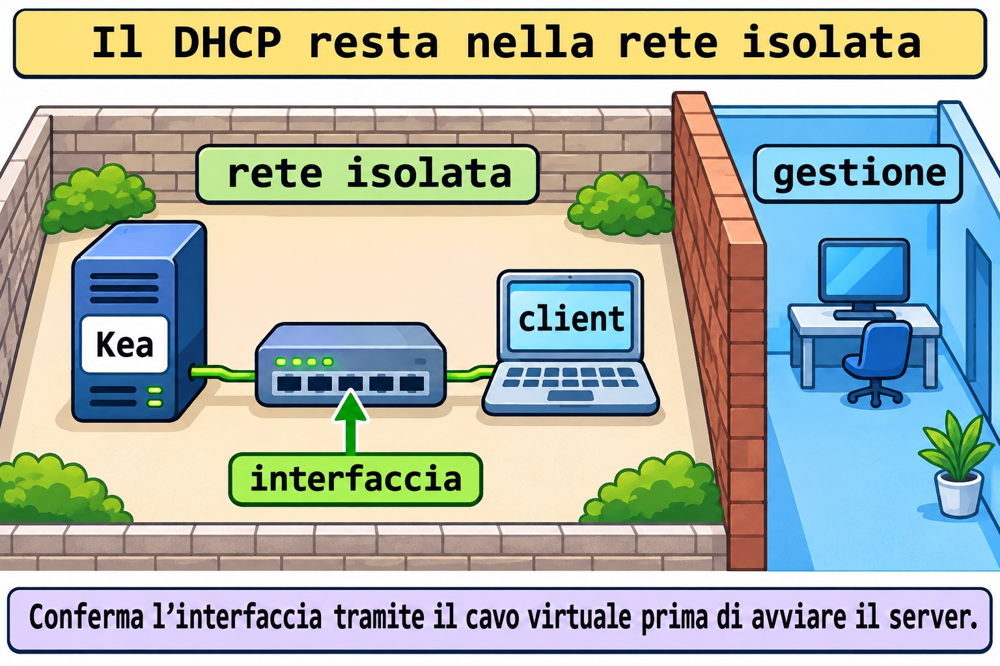
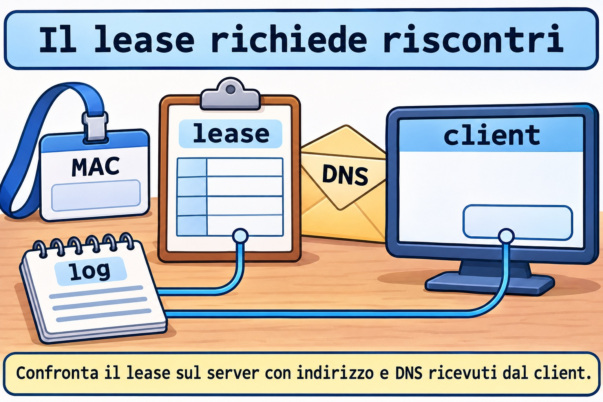

Lezione 19.3 · DHCP
Il cuore di questa lezione: assegna lease Kea solo nella rete isolata e verifica indirizzo, DNS e ripristino del client.
| Scheda | Piano di lavoro |
|---|---|
| Modulo | M19 · Servizi di rete, lezione 3 di 9 |
| Quando | Settimana 25 |
| Alla fine | assegna lease Kea solo nella rete isolata e verifica indirizzo, DNS e ripristino del client. |
| Prerequisiti | M17, M18; VM 201 e 202; utente student; rete isolata vmbr17 |
| Durata | 80–110 minuti |
| Snapshot | m19a3-inicio e m19a3-fim; solo VM indicate |
Il nodo Proxmox riceve solo i comandi indicati come host.
Gli altri appartengono alla VM specificata, con Bash e utente student.
Non eseguire i blocchi successivi se una verifica fallisce.
Conserva l’output reale nel diario; questa lezione non presenta un’esecuzione già effettuata.
Completa la guida del banco M19 e conserva il DNS della 19.2.
La VM 202 usa il profilo isolato m19-isolada, statico .202/24, separato dalla gestione.
Nomi canonici del modulo: il nome della VM in Proxmox e l’hostname del sistema operativo devono corrispondere al ruolo, prima di eseguire le guardie. Un nome DNS di servizio non cambia l’hostname. Se l’inventario differisce, riconcilialo dalla console prima di proseguire; non ignorare le guardie.
| VM | Hostname breve | Indirizzo isolato |
|---|---|---|
| 201 | rocky-lab | 192.0.2.201 |
| 202 | debian-lab | 192.0.2.202 |
| 204 | srv-deb | 192.0.2.204 |
| 212 | m19-client | DHCP; solo sfida 19.9 |
1 · Riscaldamento
- Perché un server DHCP sulla bridge di gestione può influire su macchine che non amministri?
- Un lease include obbligatoriamente un gateway?
- Chi deve verificare l’identità dell’interfaccia prima di avviare Kea?
Disegna DORA con le direzioni dei quattro messaggi.
Segna indirizzo offerto, server scelto e conferma finale.
2 · Perché conta
Un indirizzo manuale funzionante può nascondere l’assenza di DHCP.
Un lease registrato sul server può nascondere un client che applica opzioni diverse.
Il lab richiede verifiche da entrambi i lati e ripristino del client alla base statica.
I prossimi servizi non devono dipendere da un indirizzo temporaneo ottenuto per caso.
Ponte Windows
Ambito, lease e prenotazione descrivono oggetti diversi.
Una prenotazione identifica un client; non gli impedisce di configurare manualmente un altro indirizzo fuori dal tuo controllo.
3 · Modello mentale

Discover parte dal client; Offer arriva dal server; Request sceglie l’offerta; Ack conferma il lease.
NAK e rinnovo sono parti aggiuntive del protocollo.
Il broadcast raggiunge il segmento locale.
In questo lab non esistono relay o router fra client e server.


Kea ascolta solo sull’interfaccia reale corrispondente alla MAC di net1 della VM 204.
Non usare mai *, il nome della bridge dell’host o l’interfaccia di gestione.
4 · L'essenziale
| Oggetto | Contratto |
|---|---|
| Server | 204 srv-deb; 192.0.2.204/24 |
| Rete | vmbr17 isolata; senza porta fisica o IP sull’host |
| Pool | 192.0.2.100–192.0.2.149 |
| DNS | 192.0.2.204 |
| Dominio | lab.test |
| Gateway | Nessuno; opzione routers assente |
| Client | 202 net1; verifica temporanea; ritorno a .202 |
Kea separa server, backend dei lease e opzioni.
Useremo DHCPv4 e backend memfile persistente; non servono database esterni né pannelli.
Rocky × Debian
Il servizio principale gira su Debian 13 nella VM 204.
La VM 201 potrà servire come secondo client; nomi dei pacchetti e politica firewall vanno verificati per distribuzione.
dnsmasq combina funzioni leggere di DHCP e DNS; Kea è un server DHCP specializzato.
Il confronto è concettuale: non installare un secondo DHCP attivo su questa rete.
Decidi 1
Non hai ancora associato la MAC di net1 al nome Linux.
Quale azione è corretta?
A. Usare tutte le interfacce per cinque minuti.
B. Tenere Kea mascherato e completare l’identificazione.
C. Ascoltare su vmbr0 per trovare il client.
5 · Lab guidato
Passo 1 · Verificare il cavo virtuale e conservare lo stato
Ipotesi: Il nome registrato in un file basta a dimostrare che il cavo virtuale non sia cambiato?
Sull’host confronta qm config 204 e qm config 202 con la guida del banco.
Conferma net1 solo su vmbr17, senza uplink e senza altro DHCP attivo.
Non modificare le NIC in questa lezione.
qm snapshot 204 m19a3-inicio
qm snapshot 202 m19a3-inicioNella VM 204 verifica che il file non sia simbolico, proprietario e permessi prima di caricare le variabili locali create nella 19.1.
Non caricare file scaricati come configurazione della shell.
test ! -L /etc/m19-lab.env || exit 1
test "$(stat -c %u:%g:%a /etc/m19-lab.env)" = 0:0:644 || exit 1
cat /etc/m19-lab.env
. /etc/m19-lab.env
[[ "$LAB_IF" =~ ^[a-zA-Z][a-zA-Z0-9_-]{0,14}$ ]] || exit 1
test "$LAB_IP" = 192.0.2.204 || exit 1
test "$LAB_NET" = 192.0.2.0/24 || exit 1
ip -br link
ip -4 address show dev "$LAB_IF"
ip -4 route
sudo ss -lunp | grep -E ":67[[:space:]]" || trueL’assenza di socket UDP 67 nella VM 204 non dimostra l’assenza di altri DHCP nel segmento.
Conferma l’inventario dei servizi del lab e cattura un Discover se hai dubbi.
Fermati se compare un’offerta di origine sconosciuta.
Output atteso: LAB_IF corrisponde alla MAC reale di net1 e ha .204/24; nessun lease è stato avviato.
Verifica: Se trovi una divergenza, correggi documentazione e interfaccia tramite la guida prima di continuare. Non adattare Kea alla gestione come scorciatoia.
Passo 2 · Installare mascherato e preparare l’ambito
Ipotesi: Validare JSON garantisce anche che il socket si aprirà sull’interfaccia corretta?
if dpkg-query -W -f='${Status}' kea-dhcp4-server 2>/dev/null | grep -q "install ok installed"; then exit 1; fi
sudo systemctl mask kea-dhcp4-server.service
sudo apt update && sudo apt install kea-dhcp4-server tcpdump
sudo cp -a /etc/kea/kea-dhcp4.conf /etc/kea/kea-dhcp4.conf.m19-original
sudo tee /etc/kea/kea-dhcp4.conf >/dev/null <<EOF
{
"Dhcp4": {
"interfaces-config": { "interfaces": [ "$LAB_IF" ] },
"lease-database": {
"type": "memfile",
"persist": true,
"name": "/var/lib/kea/kea-leases4.csv"
},
"valid-lifetime": 600,
"renew-timer": 300,
"rebind-timer": 450,
"subnet4": [ {
"id": 19,
"subnet": "192.0.2.0/24",
"pools": [ { "pool": "192.0.2.100 - 192.0.2.149" } ],
"option-data": [
{ "name": "domain-name-servers", "data": "192.0.2.204" },
{ "name": "domain-name", "data": "lab.test" }
]
} ],
"loggers": [ {
"name": "kea-dhcp4",
"output-options": [ { "output": "stdout" } ],
"severity": "INFO"
} ]
}
}
EOF
sudo chown root:_kea /etc/kea/kea-dhcp4.conf && sudo chmod 0640 /etc/kea/kea-dhcp4.conf || exit 1
sudo -u _kea kea-dhcp4 -t /etc/kea/kea-dhcp4.conf || exit 1I tempi sopra sono parametri scelti per osservare il rinnovo nel lab, non durate misurate.
Non c’è un’opzione router: il segmento deve raggiungere solo servizi locali.
Il validatore di Kea 2.6 controlla la configurazione, ma non sostituisce avvio, socket, log e un lease reale.
Non modificare manualmente il CSV dei lease.
Output atteso: Configurazione accettata dal validatore e demone ancora mascherato. L’unica interfaccia elencata è quella identificata dalla MAC isolata.
Verifica: Leggi l’intero file: il pool non include server statici, dominio corretto, DNS .204 e nessuna opzione routers.
Il file scritto dal heredoc deve essere root:_kea 0640. La directory /etc/kea può appartenere a _kea:_kea con modo 0750; il profilo AppArmor può negare dac_override anche a root. Per questo validiamo come _kea, verificando l’accesso previsto senza disattivare AppArmor. Dopo modifiche e ripristini conserva proprietario, gruppo e modo.
Passo 3 · Avviare solo dopo la verifica dell’interfaccia
Ipotesi: Un firewall permissivo compensa l’ascolto sull’interfaccia sbagliata?
Se esiste un firewall attivo, applica la procedura M16 per DHCPv4 solo su questa interfaccia: client UDP 68 verso server UDP 67, incluso broadcast locale.
Conserva gestione e politica esistente.
sudo -u _kea kea-dhcp4 -t /etc/kea/kea-dhcp4.conf && sudo systemctl unmask kea-dhcp4-server.service && sudo systemctl enable --now kea-dhcp4-server.service
sudo systemctl --no-pager --full status kea-dhcp4-server
sudo journalctl -u kea-dhcp4-server -b --no-pager -n 50
sudo ss -lunp | grep -E ":67[[:space:]]"
sudo timeout 25 tcpdump -ni "$LAB_IF" -e -vv "udp port 67 or udp port 68"Kea può usare socket raw; per questo una sola riga di ss non identifica tutto il percorso.
Confronta configurazione, log di apertura dell’interfaccia e cattura sul dispositivo reale.
Output atteso: Il demone si avvia senza errori e indica solo l’interfaccia isolata. Senza un nuovo client potrebbe non esserci DORA durante la cattura.
Verifica: Se il demone apre l’interfaccia sbagliata, fermalo immediatamente, tienilo mascherato e correggi l’origine. Non provare mai un’offerta sulla gestione.
Passo 4 · Richiedere un lease in un profilo temporaneo
Ipotesi: Cambiare il metodo IPv4 del profilo di gestione equivale a cambiare il profilo isolato?
Nella VM 202, mantieni disponibili una sessione SSH tramite gestione e la console.
Associa net1 alla MAC, trova l’UUID di m19-isolada e registra la configurazione prima del cambio.
ip -br link
nmcli -f NAME,UUID,TYPE,DEVICE connection show
read -r -p "Interface da MAC de net1 da VM 202: " CLIENT_IF
read -r -p "UUID do perfil m19-isolada: " BASE_UUID
[[ "$CLIENT_IF" =~ ^[a-zA-Z][a-zA-Z0-9_-]{0,14}$ ]] || exit 1
[[ "$BASE_UUID" =~ ^[0-9a-fA-F-]{36}$ ]] || exit 1
test "$(nmcli -g connection.id connection show "$BASE_UUID")" = m19-isolada || exit 1
nmcli connection show "$BASE_UUID" > ~/m19a3-base-profile.txt
nmcli -f GENERAL,IP4 device show "$CLIENT_IF"
ip -4 routeConferma profilo statico .202/24, interfaccia esatta e rotta predefinita solo tramite gestione.
Se non corrispondono, torna alla guida.
Verifica che non esista un vecchio profilo chiamato m19-dhcp-test.
Prima di attivare il profilo, apri una seconda sessione sulla VM 204 e ripeti la cattura tcpdump sulla LAB_IF isolata. Avvia la cattura subito prima di nmcli up nella VM 202, così la finestra include DORA.
if nmcli -t -f NAME connection show | grep -Fxq m19-dhcp-test; then exit 1; fi
sudo nmcli connection add type ethernet ifname "$CLIENT_IF" con-name m19-dhcp-test connection.autoconnect no ipv4.method auto ipv4.never-default yes ipv4.dns-priority 200 ipv6.method disabled
TEST_UUID=$(nmcli -g connection.uuid connection show m19-dhcp-test)
[[ "$TEST_UUID" =~ ^[0-9a-fA-F-]{36}$ ]] || exit 1
printf '%s
%s
%s
' "$CLIENT_IF" "$BASE_UUID" "$TEST_UUID" > ~/m19a3-client-state.txt
sudo nmcli connection up uuid "$TEST_UUID" ifname "$CLIENT_IF"
nmcli -f GENERAL,IP4,DHCP4 device show "$CLIENT_IF"
ip -4 routeLa priorità DNS 200 mantiene preferito il DNS di gestione se la sua priorità è inferiore, come nella guida.
Se la politica reale differisce, fermati e registra prima di attivare; non provocare un cambio globale di DNS come effetto collaterale.
Output atteso: Solo net1 riceve un indirizzo del pool; DHCP4 mostra DNS .204 e dominio. La rotta predefinita di gestione resta uguale.
Verifica: Confronta MAC del client, indirizzo ricevuto, server DHCP e opzioni. La sezione DHCP4 contiene valori reali: non copiare un lease illustrativo nel diario.
Passo 5 · Confrontare client, server e prenotazione
Ipotesi: Vedere un indirizzo sul client dimostra che provenga da questo Kea?


Nella VM 204 leggi journal e lease senza modificare il CSV.
Confronta indirizzo e identità con i dati reali della VM 202.
sudo journalctl -u kea-dhcp4-server -b --no-pager -n 80
sudo head -n 1 /var/lib/kea/kea-leases4.csv
sudo tail -n 15 /var/lib/kea/kea-leases4.csvIl CSV memfile può contenere più righe storiche dello stesso indirizzo fino alla pulizia periodica.
Non contare le righe come client attivi; interpreta intestazione, identità e validità del lease.
Nella VM 202 esegui query esplicite al DNS ricevuto, conservando il resolver di gestione.
dig @192.0.2.204 app.lab.test A
dig @192.0.2.204 lab.test MX
ip -4 address show dev "$CLIENT_IF"Ora applica una prenotazione controllata per il client 202: .150 resta fuori dal pool dinamico. Verifica nell’inventario che sia libero prima di assegnarlo.
Nella VM 202 leggi la MAC reale di net1 con cat /sys/class/net/"$CLIENT_IF"/address; confrontala con net1 del nodo. Copia solo quel valore nella richiesta seguente sulla VM 204.
read -r -p "MAC real de net1 da VM 202: " CLIENT_MAC
[[ "$CLIENT_MAC" =~ ^([0-9a-fA-F]{2}:){5}[0-9a-fA-F]{2}$ ]] || exit 1
sudo test ! -e /etc/kea/kea-dhcp4.conf.before-reservation || exit 1
sudo cp -a /etc/kea/kea-dhcp4.conf /etc/kea/kea-dhcp4.conf.before-reservation
sudo python3 - "$CLIENT_MAC" <<'PY'
import json,sys
p="/etc/kea/kea-dhcp4.conf"
with open(p) as f: c=json.load(f)
s=c["Dhcp4"]["subnet4"][0]
assert s["subnet"] == "192.0.2.0/24"
assert "reservations" not in s
s["reservations"]=[{"hw-address":sys.argv[1].lower(),"ip-address":"192.0.2.150"}]
with open(p,"w") as f: json.dump(c,f,indent=2); f.write("\n")
PY
sudo -u _kea kea-dhcp4 -t /etc/kea/kea-dhcp4.conf && sudo systemctl restart kea-dhcp4-server
sudo journalctl -u kea-dhcp4-server -b --no-pager -n 25Se la validazione fallisce, non riavviare: ripristina la copia precedente e valida di nuovo. Controlla che il file conservi l’unica interfaccia isolata e che il pool non sia cambiato.
Nella VM 202 riattiva soltanto il profilo temporaneo; il profilo di gestione resta attivo. Una nuova acquisizione deve ora ricevere .150, identificata dalla MAC reale.
sudo nmcli connection down uuid "$TEST_UUID"
sudo nmcli connection up uuid "$TEST_UUID" ifname "$CLIENT_IF"
nmcli -f GENERAL,IP4,DHCP4 device show "$CLIENT_IF"Confronta il nuovo lease nei log Kea e sul client. Conserva la prenotazione per questa MAC; gli altri client continuano a usare il pool e al Passo 6 il client 202 torna statico .202.
Output atteso: Il lease reale corrisponde fra client e server. Distingui pool dinamico, prenotazione e indirizzo statico.
Verifica: DNS ricevuto e risposta corretta sono verifiche distinte. Un server DHCP può fornire un’opzione sintatticamente valida e semanticamente errata.
Decidi 2
L’indirizzo è nel pool, ma DNS punta a un altro server.
Che cosa fai?
A. Confrontare opzioni del lease, origine dell’offerta e configurazione applicata.
B. Assegnare un gateway qualsiasi al client.
C. Accettare perché ottenere un indirizzo dimostra tutto.
Passo 6 · Ripristinare il client e verificare l’avvio
Ipotesi: Eliminare il profilo temporaneo garantisce che quello statico sia tornato attivo?
Nella stessa sessione Bash della VM 202 usa solo gli UUID registrati.
Se ti sei riconnesso, leggi il diario e controlla ogni valore con nmcli prima di definirlo; non eseguire il diario come script.
test "$(nmcli -g connection.id connection show "$BASE_UUID")" = m19-isolada || exit 1
test "$(nmcli -g connection.id connection show "$TEST_UUID")" = m19-dhcp-test || exit 1
sudo nmcli connection up uuid "$BASE_UUID" ifname "$CLIENT_IF"
nmcli -f GENERAL,IP4 device show "$CLIENT_IF"
ip -4 routeSolo dopo aver verificato .202/24 e gestione conservata, rimuovi il profilo temporaneo tramite l’UUID esatto.
Non usare mai una rimozione con un criterio ampio.
sudo nmcli connection delete uuid "$TEST_UUID"
dig @192.0.2.204 app.lab.test A
nmcli -f NAME,UUID,DEVICE connection show --activeReboot di verifica: Riavvia 202 dalla console e verifica gestione, profilo statico isolato e DNS esplicito. Riavvia 204 separatamente e verifica BIND e Kea sull’interfaccia corretta.
Nella VM 204, dopo il reboot:
sudo systemctl is-active named kea-dhcp4-server
sudo -u _kea kea-dhcp4 -t /etc/kea/kea-dhcp4.conf
sudo journalctl -u kea-dhcp4-server -b --no-pager -n 35
ip -4 address
ip -4 routeOutput atteso: Kea resta disponibile solo nell’isolamento. Il client 202 termina statico .202, pronto per le prossime lezioni.
Verifica: Sull’host esegui gli snapshot finali di 204 e 202. Conserva Kea per la sfida 19.9; non creare la VM 212 adesso.
qm snapshot 204 m19a3-fim
qm snapshot 202 m19a3-fim6 · Rompi e ripara
Guasto 1 · JSON rifiutato prima dell’avvio
Sintomo: La copia di esercizio non supera il validatore.
Indagine: Copia il file in /tmp/m19-kea-broken.json, rimuovi una virgola solo in questa copia ed esegui sudo kea-dhcp4 -t /tmp/m19-kea-broken.json.
Causa: La struttura JSON non rappresenta la configurazione prevista.
Riparazione: Ripristina la virgola nella copia e valida di nuovo; non caricare il file guasto nel servizio.
Verifica: La configurazione attiva continua a rispondere e la copia corretta supera il controllo.
Prevenzione: Valida prima di avviare o riavviare.
Guasto 2 · Client senza offerta
Sintomo: Il profilo DHCP attende e non riceve un indirizzo.
Indagine: Cattura sull’interfaccia isolata; confronta Discover, journal Kea, MAC e bridge delle due VM.
Causa: Può esserci un cavo virtuale errato, interfaccia sbagliata, demone fermo o filtraggio.
Riparazione: Correggi solo la causa osservata. Se l’interfaccia è incerta, ferma Kea; non aprire mai tutte le interfacce.
Verifica: Un’offerta del server previsto è seguita da Request e Ack.
Prevenzione: Associa MAC e dispositivo prima della prima offerta.
Guasto 3 · Indirizzo corretto, DNS errato
Sintomo: Il client ha un indirizzo del pool, ma i nomi del lab falliscono.
Indagine: Confronta opzioni DHCP4 e query esplicita all’indirizzo DNS ricevuto.
Causa: L’opzione DNS può essere sbagliata oppure il servizio DNS irraggiungibile.
Riparazione: Correggi l’opzione nel file noto, valida e riavvia Kea solo dopo aver verificato l’interfaccia; rinnova il profilo di prova controllato.
Verifica: Il nuovo lease mostra .204 e la query esplicita risponde.
Prevenzione: Controlla la semantica delle opzioni oltre all’indirizzo del pool.
7 · Trappole
Prima di accusare il servizio, verifica VM, interfaccia e rete.
Una risposta corretta di un altro server resta la verifica sbagliata.
Un file accettato dal validatore non dimostra che il processo lo abbia caricato.
Controlla anche stato, socket e risposta del client.
Gli indirizzi di documentazione usati qui appartengono solo al segmento segregato.
Se si sovrappongono a gestione, VPN o rotte esistenti, fermati.
8 · Quiz
- Perché non esiste l’opzione routers in questa configurazione?
- Che cosa distingue Offer da Ack?
- Il validatore dimostra l’apertura del socket?
- Una prenotazione appartiene obbligatoriamente al pool dinamico?
- Come deve terminare la lezione il client?
Rispondi prima di aprire le soluzioni.
Per ogni risposta, indica un’osservazione capace di smentirla.
9 · Promemoria
sudo -u _kea kea-dhcp4 -t /etc/kea/kea-dhcp4.conf
sudo journalctl -u kea-dhcp4-server -b --no-pager -n 40
ip -4 address
nmcli -f GENERAL,IP4,DHCP4 device showFlashcard: Qual è l’oggetto? Chi risponde? Quale osservazione distingue configurazione e risultato?
!explica
!feynman
!quiz
10 · Checklist e chiusura
- [ ] MAC e interfaccia reale di net1 verificate prima dell’avvio.
- [ ] Solo Kea nell’isolamento; nessun DHCP sulla gestione.
- [ ] Lease e DNS confrontati da entrambi i lati.
- [ ] Client 202 ripristinato al profilo statico.
- [ ] Kea persistente e VM 212 non ancora creata.
Ultimo esercizio: Rifai il disegno iniziale usando solo riscontri registrati nel lab. Segna ciò che non hai ancora dimostrato.
Lo snapshot finale registra una fase coerente; non sostituisce il backup indipendente.
Non eliminare la VM 204 né la rete isolata: servono alle prossime lezioni.
11 · Nella vita reale
Missione di sola lettura: in un ambiente autorizzato, identifica server interrogato, interfaccia usata e responsabile della configurazione.
Non modificare profili, porte, lease o zone.
Consegna tre riscontri con ora e contesto, un’ipotesi e un limite.
Rimuovi i dati privati prima di condividere il rapporto.
12 · Approfondire quando vuoi
Kea 2.6: configurazione DHCPv4, lease e prenotazioni
Debian 13: pacchetto kea-dhcp4-server
NetworkManager: proprietà IPv4
Usa la documentazione della versione installata.
Controlla il manuale locale prima di adattare un’opzione di un’altra versione.
Soluzioni commentate
Riscaldamento: il broadcast può raggiungere terzi nella stessa rete; il gateway è un’opzione, non un obbligo; l’operatore deve verificare MAC e cavo virtuale.
Decidi 1: B.
Senza verifica dell’interfaccia il server resta mascherato.
Decidi 2: A.
L’indirizzo ricevuto non dimostra opzioni corrette né origine del lease.
Quiz 1: il segmento non ha router e non richiede una rotta predefinita.
Quiz 2: Offer propone; Ack conferma il lease richiesto.
Quiz 3: no; servono avvio, log dell’interfaccia e conversazione reale.
Quiz 4: no; .150 è stato pianificato fuori dal pool e deve essere libero.
Quiz 5: profilo m19-isolada statico .202/24, gestione conservata e profilo temporaneo rimosso tramite UUID esatto.